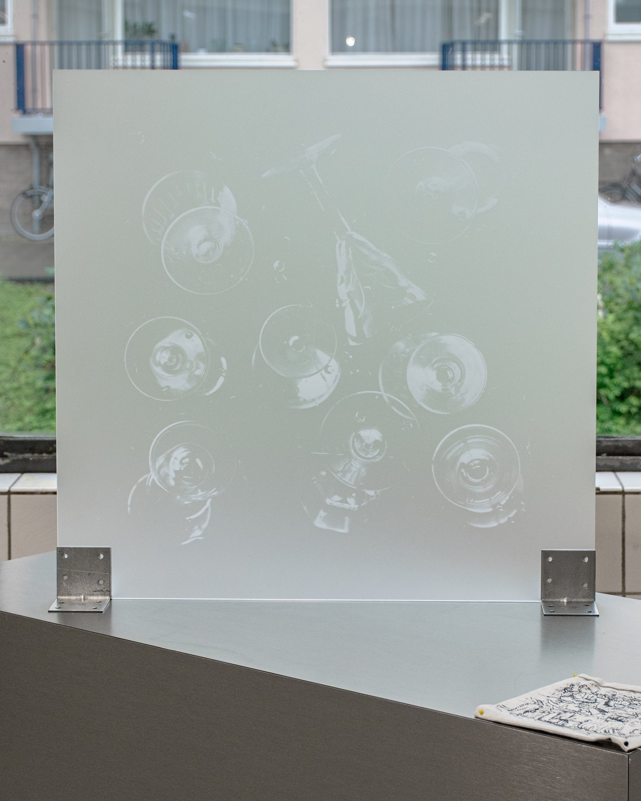

Last Call (2025) | Collaboration with Sixin Chen | Reflection, part AGALAB Artist in Residence | De Bouwput, Amsterdam, The Netherlands


Holding Glasses (2024) | Early Years Project#7 A Change in The Paradigm | BACC, Bangkok, Thailand


14.04.2023 18:00:00 CEST (2023) | Werkplaats Typografie, Arnhem, The Netherlands


Weather Report (2023) | AGALAB's Boeken Project: To The Sweet Murmur of Leaves | De Bouwput, Amsterdam, The Netherlands


Looking Glasses (2022) | 2Walls, Zaandam, The Netherlands